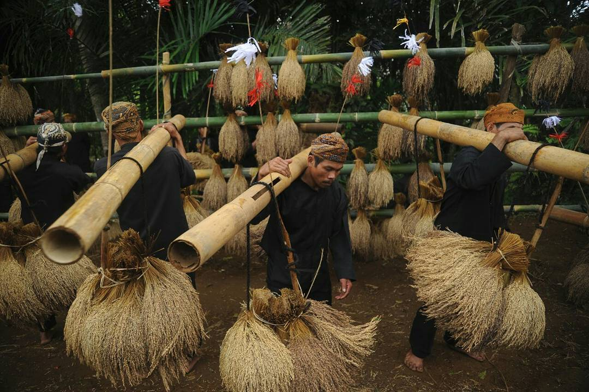
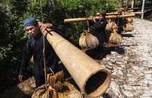
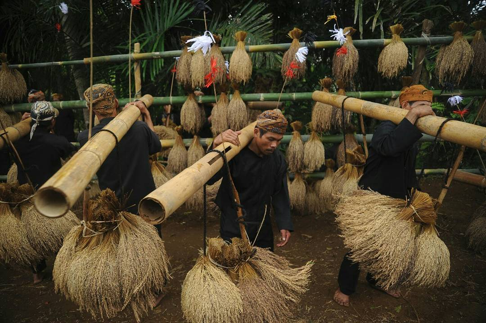
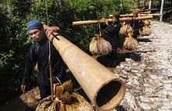

| ATURAN/KAPAMALIAN
1. Kapamalian adat :
Warga kudu ngajaga jeung ngormatan kapamalian adat, saperti ngalaksanakeun upacara adat anu dilaksanakeun sacara rutin, sapertos syukuran panen, upacara ritual, sareng tradisi agama.
2. Kawajiban ngariung :
Masarakat diwajibkeun pikeun ngariung dina musyawarah adat jeung ngabantu kabutuhan sosial di kampung. Sistem gotong royong dina ngurus bangunan, pertanian, atawa ngalaksanakeun acara adat jadi bagian penting tina kapamalian.
3. Hormat ka Panghulu :
Kapamalian utama nyaéta ngajaga tradisi ngormatan ka Panghulu salaku pemimpin adat. Keputusan anu dicandak ku Panghulu kudu dihargaan sarta dilaksanakeun ku warga.
4. Hukum adat :
Pelanggaran terhadap aturan adat bisa dihadapi ku sangsi adat, sapertos denda sosial, sanksi ritual, atawa larangan ngikut acara adat, minangka cara ngajaga ketertiban di masarakat.
5. Larangan terhadap alam :
Warga diingetkeun supaya teu ngalakukeun tindakan anu ngarugikeun alam, sapertos ngaruksak hutan, nyampurkeun sampah sembarangan, atawa ngotoran sungai, anu dipercaya bisa ngabalukarkeun musibah.


 


